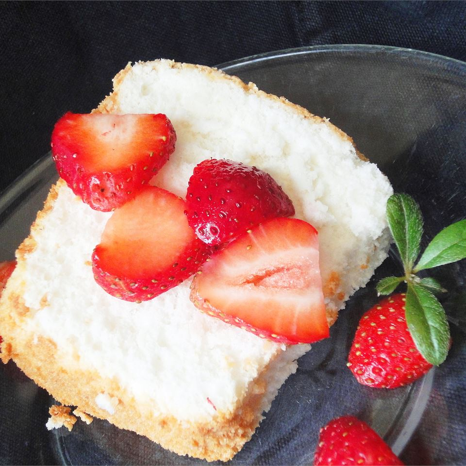

Angel Food Cake

Homemade angel food cake is worth the work. It is moist, unlike the sweet styrofoam available in the grocery bakery. A tube pan with a removable bottom is highly recommended.
Ingredients
- 1 ¼ cups cake flour
- 1 ¾ cups white sugar
- ¼ teaspoon salt
- 1 ½ cups egg whites
- 1 teaspoon cream of tartar
- ½ teaspoon vanilla extract
- ½ teaspoon almond extract
Directions
- Beat egg whites until they form stiff peaks, and then add cream of tartar, vanilla extract, and almond extract.
- Sift together flour, sugar, and salt. Repeat five times.
- Gently combine the egg whites with the dry ingredients, and then pour into an ungreased 10 inch tube pan.
- Place cake pan in a cold oven. Turn the oven on; set it to 325 degrees F (165 degrees C). Cook for about one hour, or until cake is golden brown.
- Invert cake, and allow it to cool in the pan. When thoroughly cooled, remove from pan.